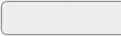

Behind The Day Boxes #
Ibraheem Umaru-Mohammed wrote yesterday, asking how the day header boxes work that you see to the right on the front page. Since this site is primarily comprised of div elements, such things only require a bit of css trickery. And you can find a wealth of css tutorials around, including the teaser box and the trashbox.
Adding a daily box to Hobix is really simple. In your hobix.yaml, you simply override the default day_header chunk for your Quick template. Like so:
- hobix/out/quick:
day_header: |
<div class="dayHeader">
<div class="dayBox">
<!-- The full weekday name -->
<h2><%= day.strftime( "%A" ) %></h2>
<!-- The date in YYYY.MM.DD format, with each
part of the date linked to the appropriate archive. -->
<h3><a href="/<%= day.year %>/"><%= day.year %></a>.<a
href="<%= day.strftime( "/%Y/%m/" ) %>"><%=
day.strftime( "%m" ) %></a>.<a
href="<%= day.strftime( "/%Y/%m/%d.html" ) %>"><%=
day.strftime( "%d" ) %></a></h3>
</div>
</div>
I have an empty file called index.html.quick-summary in my skel directory, so I get an index page that uses the default template with summarized entries. Overriden chunks (like the above) apply to .quick, .quick-archive and .quick-summary template files.
The HTML above consists of two div elements: one with class dayHeader and, inside, one with class dayBox. The weekday name is an h2. The date is an h3.
Then, I made two images in Photoshop. A left-side edge, which extends to the right as far as I’d like the box to stretch. And a right-side edge, which is short.

There are likely better ways to do this, but I was in a rush and I wanted to start posting all this great news, you know?? So, I positioned the stretch images as the lower background and the short image as the higher background. The higher background is placed top right in the style definition and always covers up the excess stretch.
So, here’s the style definition I popped in my site.css:
.dayHeader {
background: url(/images/redhanded-boxleft.gif) no-repeat top left;
float: right;
margin: 0px 5px;
text-align: center;
}
.dayBox {
background: url(/images/redhanded-boxright.gif) no-repeat top right;
padding: 9px 10px 12px 10px;
}
The float: right was used to push the header boxes to the right and let the blog text flow around it. Which I think turned out really nice.
_ibz
Odanuki
Indeed, thanks why – very helpful!
Comments are closed for this entry.